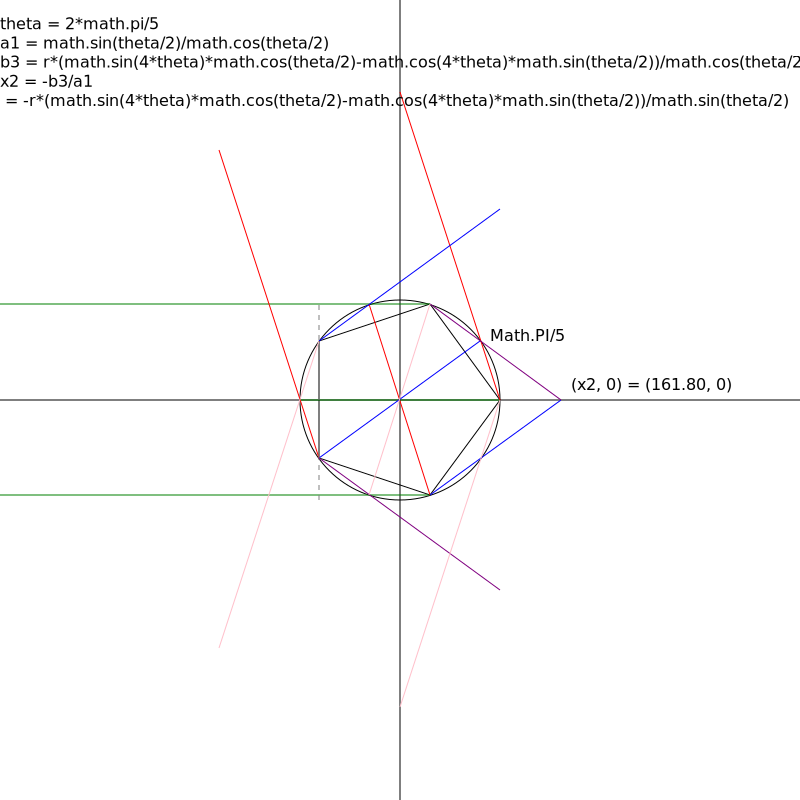

\(\theta = {{2 \pi} \over 5} \)
\(a_1 = {\sin{\theta \over 2} \over \cos{\theta \over 2}} \)
\(b_3 = r{{\sin{4 \theta}\cos{\theta \over 2} - cos{4 \theta}sin{\theta \over 2}}\over \cos{\theta \over 2}} \)
\(x_2 = {-b_3 \over a_1 }
= - r {{\sin{4 \theta}\cos{\theta \over 2} - \cos{4 \theta} \sin{\theta \over 2}} \over \sin{\theta \over 2}} \)